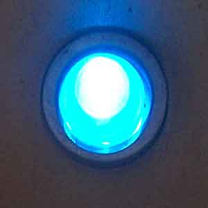

In modern era we are highly familiar with the term LED. It stands for light emitting diode. These are mainly used for making indicators and various other types of lightning. In 1962 first this type of light appeared to the market. Which was low intensity red light, now the modern versions of this type of lights are visible, ultraviolet, inferred etc.
In LED electrical energy is converter in to optical energy. These are example of electro-luminescence, the process in which emission of photos takes place by the recombination of excess electrons and holes in a direct band gap semiconductor. The main advantages of using these are the low energy consumption, longer lifetime, strong build, smaller size etc.
Working of LED or Light Emitting Diode
Working of LED
In LED s the electrical energy is converted in to optical energy. The main mechanism of working is injection electro luminescence. In injection electro luminescence, the carrier are injected zacross a p-n junction. Now the recombination of excess electrons and the holes can result photon emission if the semiconductor used, is a direct band gap semiconductor. In direct band gap semiconductor, transition between the two allowed bands can take place with no change in crystal momentum.
When across the p-n junction, a voltage is applied then electrons and the holes are injected across the depletion region and they become excess minority carriers. These recombine with majority carriers when these minority carriers diffuse this in to neutral semiconductor region. This recombination process in direct band gap material results the emission of photons. The output photon intensity is directly proportional to the ideal diode diffusion electric current which is proportional to the recombination rate.
The wave length of output optical signals depends upon the band gap energy. The output wave length can be engineered within certain limits by using compound semiconductors, so that a particular color can be observed, provided the output is in visible range.

Application of LED or Light Emitting Diode
Today almost everywhere LEDs lights are used and the application of LED is huge. First we are going to see through the list, then we will categorize the application of these.
•In motorcycle and bicycle lights.
•In traffic lights and signals.
•In message displaying boards.
•In light bulbs and many more.
Now, practically if we sit to list all the applications it will be a non-ending list. So, here we are classifying the use in to some parts.
i) Indicators and signs:- these are mainly used in traffic signals, exit signs, light weight message, displaying box etc
ii) Lighting:- Light Emitting Diode lamps have become highly popular and as the energy consumption is very low for them, they are also being made by LED s. In 2001, the Italian village Torraca was the first place to convert all its lighting to LED. In television and computer/laptop displaying, LEDs are used.
iii) Non visual application:- Communication, sensor are the main area of non visual application of LEDs.
Advantages of LED or Light Emitting Diode
If anybody compares LEDs to other illumination methods present in the market now days it will be found that LED lighting in by far the most saving solution. In modern era of technology, there is an up gradation from analog to digital. You can say LED is digital light which has huge advantages over conventional analog lights. The main advantages are briefly described below.
(1) Size :- Sizes of Light Emitting Diodes are from 3 mm to 8 mm long. The small size allows them to be used in small spaces where tube lights cannot be used. Because of its small size, various designs can be made very simply.
(2) Larger lifetime :- This is the number one benefit of LEDs lights. As an example a high power white LEDs life time is projected to be 35,000 to 50,000 hours. Where as an incandescent bulbs life time is 750 to 2,000 hours. For compact fluorescent bulbs, the life time is 8,000 to 10,000 hours. Actually unlike standard lighting LEDs do not burn out. They just gradually fade.
(3) Lower temperature: - LED's mechanism does not consists of any step to produce heat. In conventional lights, the production of heat are very common fact. They waste most of their energy as heat. They remain cool.
(4) Energy efficiency :- Light Emitting Diode is today’s most energy efficient way of lighting its energy efficiency is nearly 80% to 90% whereas traditional lights have 20% energy efficiency, 80% is lost, as heat. More over the quality of lighting is very good.
(5) Design flexibility :- LEDs can be merged in any shape or combination. They can be used in singly as an irony. Single LED can be operated, resulting in a dynamic control of light. Superb lighting effects of different colors can be achieved by well designed LED illumination system.
(6) Ecologically friendly:- LED lights do not contain any toxic chemical. They do not leave any toxic material and 100% recyclable. Their illuminations are close to no UV emission. The solid package of it can be designed to focus its light also.
(7) Color:- LEDs can be emit light of intended color this is done by charging the compositions of the solid state materials doping without using any color filter.
(8) On/off time:- Light Emitting Diodes can be operated very quickly. They can be used in frequent on/off operation in communication devices.
 by
by